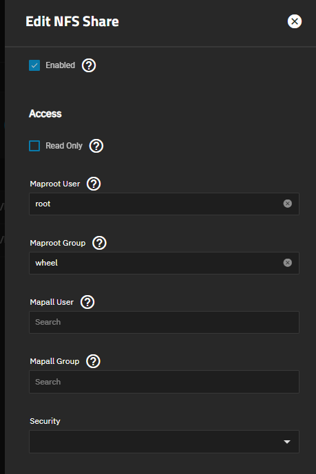
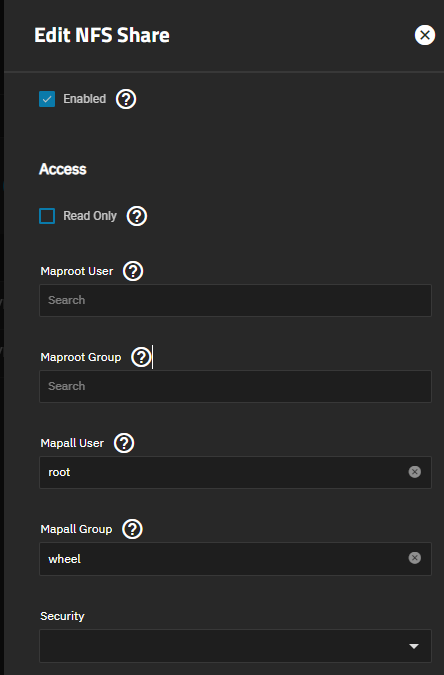

Proxmox VE (PVE) CT LXC备份失败
问题
在PVE中使用NFS作为存储经常会遇到权限问题，我这里使用FakeNAS~~(TrueNAS SCALE)~~ NFS的共享作为虚拟机的备份，但是会发现非特权容器都会出现备份失败的情况具体情况如下
1
2
3
4
5
6
7
8
9
10
11
12
13
14
15
16
17
18
19
20
21
22
23
24
25
26
27
INFO: starting new backup job: vzdump 112 --notes-template '{{guestname}}' --storage vm_omv --remove 0 --mode snapshot --compress zstd --node serverhub
INFO: Starting Backup of VM 112 (lxc)
INFO: Backup started at 2023-06-25 14:50:12
INFO: status = running
INFO: CT Name: Nginx
INFO: including mount point rootfs ('/') in backup
INFO: mode failure - some volumes do not support snapshots
INFO: trying 'suspend' mode instead
INFO: backup mode: suspend
INFO: ionice priority: 7
INFO: CT Name: Nginx
INFO: including mount point rootfs ('/') in backup
INFO: temporary directory is on NFS, disabling xattr and acl support, consider configuring a local tmpdir via /etc/vzdump.conf
INFO: starting first sync /proc/2982556/root/ to /mnt/pve/vm_omv/dump/vzdump-lxc-112-2023_06_25-14_50_12.tmp
INFO: first sync finished - transferred 1.29G bytes in 61s
INFO: suspending guest
INFO: starting final sync /proc/2982556/root/ to /mnt/pve/vm_omv/dump/vzdump-lxc-112-2023_06_25-14_50_12.tmp
INFO: final sync finished - transferred 1.05M bytes in 1s
INFO: resuming guest
INFO: guest is online again after 1 seconds
INFO: creating vzdump archive '/mnt/pve/vm_omv/dump/vzdump-lxc-112-2023_06_25-14_50_12.tar.zst'
INFO: tar: /mnt/pve/vm_omv/dump/vzdump-lxc-112-2023_06_25-14_50_12.tmp: Cannot open: Permission denied
INFO: tar: Error is not recoverable: exiting now
ERROR: Backup of VM 112 failed - command 'set -o pipefail && lxc-usernsexec -m u:0:100000:65536 -m g:0:100000:65536 -- tar cpf - --totals --one-file-system -p --sparse --numeric-owner --acls --xattrs '--xattrs-include=user.*' '--xattrs-include=security.capability' '--warning=no-file-ignored' '--warning=no-xattr-write' --one-file-system '--warning=no-file-ignored' '--directory=/mnt/pve/vm_omv/dump/vzdump-lxc-112-2023_06_25-14_50_12.tmp' ./etc/vzdump/pct.conf ./etc/vzdump/pct.fw '--directory=/mnt/pve/vm_omv/dump/vzdump-lxc-112-2023_06_25-14_50_12.tmp' --no-anchored '--exclude=lost+found' --anchored '--exclude=./tmp/?*' '--exclude=./var/tmp/?*' '--exclude=./var/run/?*.pid' . | zstd --rsyncable '--threads=1' >/mnt/pve/vm_omv/dump/vzdump-lxc-112-2023_06_25-14_50_12.tar.dat' failed: exit code 2
INFO: Failed at 2023-06-25 14:51:25
INFO: Backup job finished with errors
TASK ERROR: job errors可以看到报错中提示存储NFS 提示权限限制
原因是因为LXC使用的是非root用户，而我在TrueNAS使用Maproot User会仅限于客户端（PVE）的root用户映射到NFS服务端（TrueNAS）的root用户的权限，导致权限出错。

解决方法
更改备份的临时目录到系统盘就能轻松秒杀，但是我的系统盘是16G傲腾，无法支撑临时备份，所以不行。
1
echo "tmpdir: /tmp" >> /etc/vzdump.conf将Maproot的选项更改到Mapall，即
将
“NFS服务器将在客户端访问共享时将所有用户的权限映射为root用户的权限，但仅限于root用户”更改为“NFS服务器将在客户端访问共享时将所有用户的权限映射为root用户的权限。”。让客户端（PVE）非root权限(非特权)的LXC容器也能映射为NFS服务端（TrueNAS）root用户。